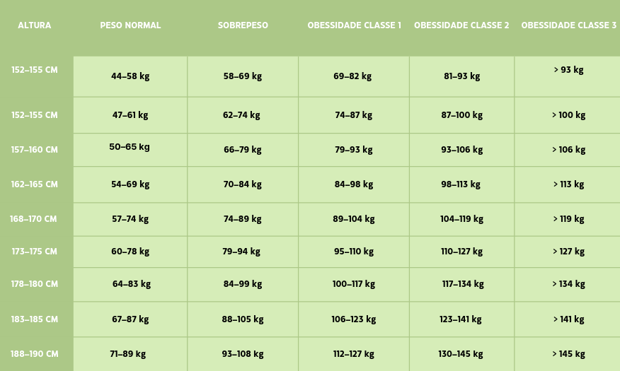

Benefícios de uma alimentação saudável
Você já se perguntou por que uma alimentação saudável é tão importante para manter o seu corpo em equilíbrio, nutrido e protegido? A verdade é que comer de maneira adequada é crucial para o bom funcionamento das funções vitais do organismo. Nosso corpo precisa de um fornecimento constante de vitaminas, nutrientes e minerais para se manter ativo e saudável.
Esses elementos essenciais são obtidos principalmente através de uma alimentação variada e equilibrada. Seguir uma dieta balanceada não traz benefícios apenas para a saúde física, mas também para o bem-estar mental. Com mais energia e disposição, quem adota hábitos alimentares saudáveis reduz o risco de desenvolver doenças como obesidade, câncer, artrite, anemia, diabetes e hipertensão, condições muitas vezes associadas a escolhas alimentares inadequadas. Lembre-se: adotar um estilo de vida mais saudável envolve disciplina, mudança de hábitos e comprometimento. O primeiro passo nessa jornada é fazer escolhas alimentares mais conscientes e nutritivas (Vitao, 2020).
Confira na tabela um o peso ideal para a sua altura:
Carboidratos
A principal função dos carboidratos é ser fonte de energia, entretanto eles também estão relacionados com a estrutura dos ácidos nucleicos e funções estruturais. Seu consumo é essencial para o bom funcionamento do organismo, o recomendado é que cerca de 45% a 65% das calorias diárias sejam do consumo desse grupo de alimentos, porém deve-se ficar atento à necessidade metabólica de cada pessoa. Quando ingeridos em excesso, podem estar relacionados com problemas de saúde, como a obesidade, entretanto uma alimentação pobre em carboidratos também pode ser prejudicial. Desse modo, é importante saber dosar a quantidade de carboidratos ingeridos para que esses cumpram adequadamente seu papel.
Proteínas
As proteínas nos fornecem os aminoácidos, que são compostos necessários para as reações químicas que ocorrem em nosso organismo. Como não produzimos alguns desses compostos, devemos ingeri-los através de certos alimentos. As proteínas que possuem todos ou a maioria dos aminoácidos essenciais para nosso organismo têm um alto valor biológico. Temos como exemplo as proteínas de origem animal: ovos, carnes, leite e derivados. Aquelas que não possuem a maioria dos aminoácidos essenciais são as de baixo valor biológico e comumente são as de origem vegetal.
Vitaminas
- Vitamina B12: É fundamental para a formação de glóbulos vermelhos e a função neurológica. A deficiência pode levar a problemas neurológicos e anemia. Além de alimentos fortificados, os suplementos de B12 são uma maneira eficaz de garantir a ingestão adequada
- Vitamina D: Crucial para a saúde óssea e o sistema imunológico. Em regiões com pouca luz solar, suplementos de vitamina D2 ou D3 (a versão vegana é derivada de líquen) são recomendados. A exposição ao sol é benéfica, mas o uso de protetor solar e estilos de vida modernos podem limitar a produção natural de vitamina D
- Ferro: O ferro não-heme encontrado em alimentos vegetais é menos absorvido que o ferro heme de fontes animais. Consumir vitamina C com alimentos ricos em ferro (como suco de laranja com feijão ou lentilhas) pode melhorar a absorção. Além disso, evite consumir café ou chá imediatamente após as refeições, pois eles podem inibir a absorção do ferro
- Cálcio: Essencial para ossos e dentes fortes. Os veganos devem garantir que estão obtendo cálcio suficiente de fontes como tofu, bebidas vegetais fortificadas e vegetais de folhas verdes. A ingestão adequada de cálcio também pode ser apoiada com uma dieta variada e equilibrada
- Ômega-3: Importante para a saúde cardiovascular e cerebral. Sementes de linhaça, chia e nozes são excelentes fontes vegetais de ALA, um tipo de ômega-3. Para obter EPA e DHA, que são formas mais ativas de ômega-3, os suplementos de algas são uma boa opção para veganos
- Proteína: Disponível em muitos alimentos vegetais. É importante consumir uma variedade de fontes para garantir todos os aminoácidos essenciais.